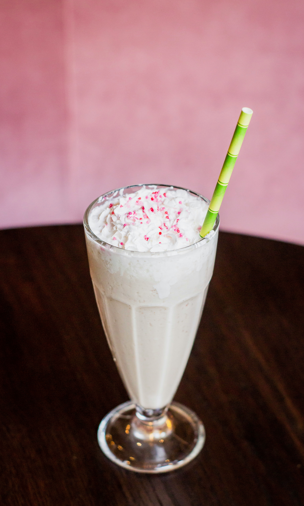

Home
Vanilla Milkshake

Description
A classic vanilla milkshake blends cold milk,
vanilla ice cream,
and vanilla extract or bean paste until smooth and creamy.
Ingredients
- 2 cups vanilla ice cream.
- 1 cup whole milk.
- 1 teaspoon vanilla extract.
- Sprinkles
Steps
- ice cream, milk, and vanilla extract together in a blender until smooth.
- Pour into glasses and serve.
- Add some sprinkles on top to decorate.